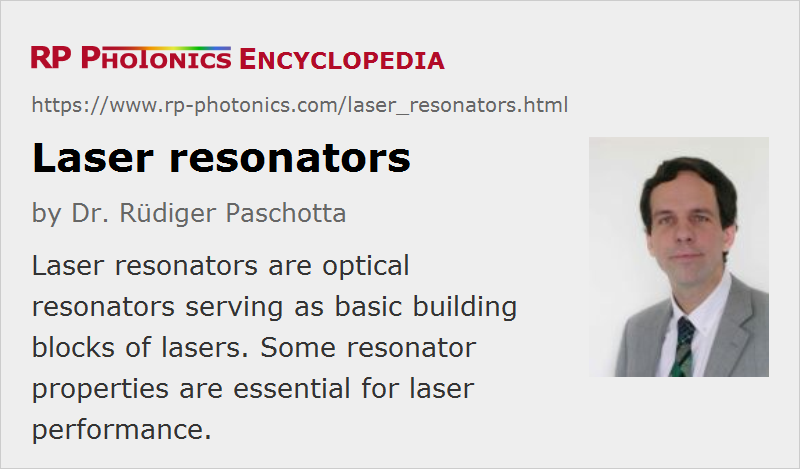

Laser Resonators
Definition: optical resonators serving as basic building blocks of lasers
Alternative term: laser cavities
More general term: optical resonators
German: Laserresonatoren
Categories: optical resonators, lasers
How to cite the article; suggest additional literature
Author: Dr. Rüdiger Paschotta
A laser generally requires a laser resonator (or laser cavity), in which the laser radiation can circulate and pass a gain medium which compensates the optical losses. Exceptions are a few cases (e.g. some free electron lasers) where a medium with very high gain is used, so that amplified spontaneous emission extracts significant power in a single pass through the gain medium.
A laser resonator typically contains multiple laser mirrors, one of them being an output coupler, a laser gain medium, and possibly additional optical elements e.g. for wavelength tuning, Q switching or mode locking. It can be a linear resonator, having two end mirrors, or a ring resonator.
The laser radiation is automatically generated at one or several frequencies corresponding to resonances (resonator modes), possibly with small deviations caused by “gain pulling”. No special measures are required for operating on the resonance; this is different for external resonators, e.g. resonant enhancement cavities.

Laser Resonators of Solid-state Lasers
Solid-state bulk lasers are usually built with several dielectric mirrors (laser mirrors), which may be plain or curved. Figure 1 shows a linear resonator and a ring resonator built in that way, and containing a laser crystal as the gain medium. In some cases, a dielectric mirror coating is placed on the gain medium itself; see the article on monolithic solid-state lasers. One of the mirrors, usually an end mirror, is the partially transmissive output coupler.
The design of the laser resonator (comprising optical elements, angles of incidence, and distances between the components) determines the beam radius of the fundamental mode at all locations along the beam, together with other important properties. For maximum beam quality (→ diffraction-limited output), the beam radius in the gain medium has to match approximately the radius of the pumped region. For smaller beam radii, operation with multiple spatial modes is obtained, leading to a non-ideal beam quality; however, such multimode lasers have other advantages such as much wider stability zones and a lower sensitivity to misalignment.
In many cases, the laser resonator design should have additional features. For example, it can be optimized
- for compactness
- for achieving certain values of the beam radius in other optical components (e.g. on a saturable absorber of a passively mode-locked laser)
- for avoiding too small beam radii in optical components (leading to optical damage particularly in Q-switched lasers)
- for minimizing adverse effects of thermal lensing and related optical aberrations in the gain medium
- for minimizing the alignment sensitivity
- for accommodating multiple laser heads
- for a certain resonator length, determining the pulse repetition rate in a mode-locked laser or the pulse duration of a Q-switched laser.
Particularly for high-power lasers with good beam quality, thermal lensing in the gain medium is very important. The resonator design should be made so that changes of the thermal lens do not affect too much the mode sizes. Also, it should have a low sensitivity to thermal aberrations [2] and misalignment [1]. The importance of these factors should not be underestimated; there are cases where two resonators even with equal mode sizes in the gain medium lead to very different laser performance and are radically different in terms of alignment.
Although it is normally not that difficult to evaluate the properties of a given laser resonator, it can be challenging to find a resonator design which satisfies multiple criteria such as those listed above. Numerical optimization, using special resonator design software, can be the only way to find good solutions, particularly for some mode-locked lasers. Also, a solid understanding of resonator properties can help considerably when trying to find resonator configurations with special combinations of properties, such as large mode areas and short lengths. For advanced design issues, a great deal of experience is at least as important as a versatile design software.
Some high-power lasers (for example with slab designs) are operated with unstable resonators, allowing a reasonable (but typically not diffraction-limited) beam quality to be achieved despite the presence of strong thermal effects in the gain medium. Due to the high diffraction losses, such laser cavities require relatively high gain.
There are various types of monolithic solid-state lasers which have the whole beam path within the laser crystal. Beam reflections are then typically realized either with dielectric coatings on crystal surfaces, or with total internal reflection.
Physical Limitations
Although various properties of laser resonators can be optimized with a suitable resonator design, there are limitations, particularly for certain combinations of properties. For example, one can only to a limited extent combine the features of a short resonator length, large mode areas and low alignment sensitivity. Even optimized resonator designs can not fully meet desirable specifications for certain lasers, particularly high-power lasers.
Note also that laser resonators can not be considered as power-scalable in a useful sense, as discussed in the Spotlight article of 2009-09-19. This means that certain design challenges are more severe for lasers with higher output powers.
Alignment of Laser Resonators
For laser resonators with simple designs, e.g. with just two mirrors around some gain medium, the initial alignment is often quite easy to find. Once the laser works, the alignment can be further optimized, simply maximizing the output power.
For more complicated resonators, it can be quite challenging to find some approximate initial alignment where the laser starts operating. In such cases, one may require some visible alignment laser, which should preferably have an appropriate wavelength, such that the laser mirrors have a high enough reflectivity for that beam.
Particularly laser resonators with large mode sizes can have a high alignment sensitivity. Even small tilts of laser mirrors, for example, may move the resonator mode such that the output power drops and possibly the beam quality is degraded.
Suppliers
The RP Photonics Buyer's Guide contains 5 suppliers for laser resonators.
Questions and Comments from Users
Here you can submit questions and comments. As far as they get accepted by the author, they will appear above this paragraph together with the author’s answer. The author will decide on acceptance based on certain criteria. Essentially, the issue must be of sufficiently broad interest.
Please do not enter personal data here; we would otherwise delete it soon. (See also our privacy declaration.) If you wish to receive personal feedback or consultancy from the author, please contact him e.g. via e-mail.
By submitting the information, you give your consent to the potential publication of your inputs on our website according to our rules. (If you later retract your consent, we will delete those inputs.) As your inputs are first reviewed by the author, they may be published with some delay.
Bibliography
| [1] | V. Magni, “Multielement stable resonators containing a variable lens”, J. Opt. Soc. Am. A 4 (10), 1962 (1987), doi:10.1364/JOSAA.4.001962 |
| [2] | R. Paschotta, “Beam quality deterioration of lasers caused by intracavity beam distortions”, Opt. Express 14 (13), 6069 (2006), doi:10.1364/OE.14.006069 |
| [3] | A. E. Siegman, Lasers, University Science Books, Mill Valley, CA (1986) |
| [4] | N. Hodgson and H. Weber, Laser Resonators and Beam Propagation, Springer Series in Optical Sciences, Springer, Berlin (2005) |
| [5] | R. Paschotta, case study on automatic resonator optimization with the RP Resonator software |
| [6] | For German readers: R. Paschotta, “Resonatordesign – unterschätztes Potenzial für bessere Laser”, http://www3.interscience.wiley.com/cgi-bin/fulltext/116313857/PDFSTART, Laser Technik Journal 4 (4), p. 50 (2007) |
See also: lasers, optical resonators, resonator design, monolithic solid-state lasers, laser mirrors, laser optics, thermal lensing, stability zones of optical resonators, unstable resonators, The Photonics Spotlight 2007-02-22, The Photonics Spotlight 2009-09-19
and other articles in the categories optical resonators, lasers

This encyclopedia is authored by Dr. Rüdiger Paschotta, the founder and executive of RP Photonics Consulting GmbH. How about a tailored training course from this distinguished expert at your location? Contact RP Photonics to find out how his technical consulting services (e.g. product designs, problem solving, independent evaluations, training) and software could become very valuable for your business!
|  |
If you like this page, please share the link with your friends and colleagues, e.g. via social media:
These sharing buttons are implemented in a privacy-friendly way!